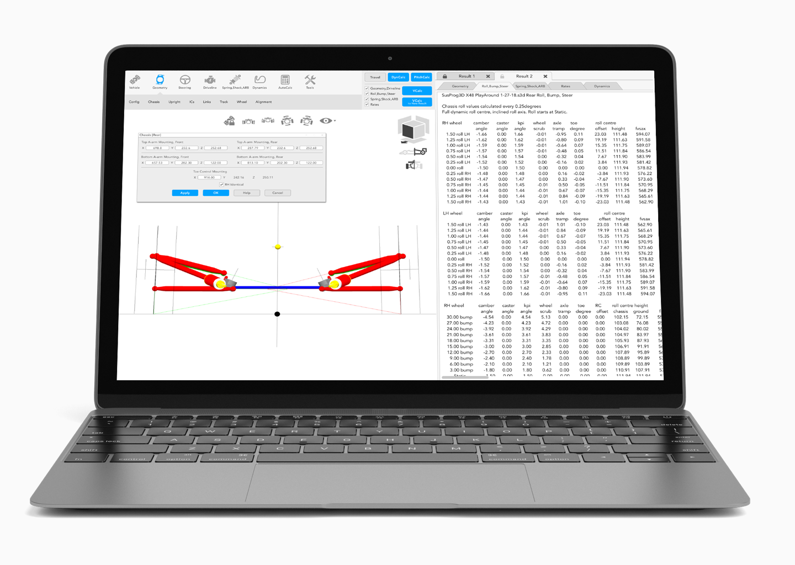

SusProg3D 2018
Making the use of SusProg3D (a premier kinematic suspension design and analysis tool) more efficient and effortless for users by increasing the usability and readability of its main interface
UI / UX Design